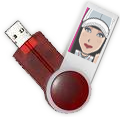
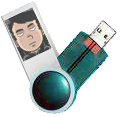

Présentation de l'agenda 24sur7
L'application 24sur7 est un agenda en ligne partagé vous permettant d'enregistrer vos rendez-vous, ou des événements journaliers, et de les partager avec d'autres utilisateurs.
- Que peut-on faire avec l'agenda 24sur7 ?
- Enregistrement à l'application/confidentialité
- 24sur7 et le respect de la vie privée
- Inscription
Que peut-on faire avec l'agenda 24sur7 ?
 24sur7 propose à ses utilisateurs de nombreuses fonctionnalités :
24sur7 propose à ses utilisateurs de nombreuses fonctionnalités :
- l'enregistrement de rendez-vous ou d'événements journaliers (anniversaires, etc.)
- la détection automatique de chevauchements dans les rendez-vous saisis
- le rappel automatique de rendez-vous imminents
- la classification des rendez-vous/événements en catégories que vous aurez définies
- le partage des contenus d'une catégorie aux autres utilisateurs
- la recherche et l'abonnement aux agendas des autres utilisateurs
- l'export de votre agenda au format iCalendar

Enregistrement à l'application/confidentialité

L'application 24sur7 requiert l'enregistrement de ses utilisateurs. Vous fournirez au moment de l'inscription des informations telles qu'un pseudonyme et une adresse email qui seront utilisées par d'autres utilisateurs pour rechercher votre profil et d'abonner à votre agenda.
Confidentialité
 L'agenda 24sur7 vous permet de (mais ne vous oblige pas à) partager vos rendez-vous et événements avec d'autres utilisateurs. Dans un souci de respect de la vie privée, par défaut, toutes les catégories existantes sont privées, et donc invisibles aux autres utilisateurs. C'est à vous de décider ce qui sera montré à l'extérieur ou pas.
L'agenda 24sur7 vous permet de (mais ne vous oblige pas à) partager vos rendez-vous et événements avec d'autres utilisateurs. Dans un souci de respect de la vie privée, par défaut, toutes les catégories existantes sont privées, et donc invisibles aux autres utilisateurs. C'est à vous de décider ce qui sera montré à l'extérieur ou pas.
Abonnements
 La transparence et la souplesse d'utilisation étant de rigueur dans l'agenda 24sur7, vous pourrez rechercher un utilisateur soit via son pseudonyme, soit via son adresse email, et vous abonner à son agenda, directement, et sans confirmation nécessaire de sa part. En s'abonnant à un utilisateur, vous pourrez ainsi voir tous les rendez-vous et événements d'une catégorie qu'il aura définie comme publique.
La transparence et la souplesse d'utilisation étant de rigueur dans l'agenda 24sur7, vous pourrez rechercher un utilisateur soit via son pseudonyme, soit via son adresse email, et vous abonner à son agenda, directement, et sans confirmation nécessaire de sa part. En s'abonnant à un utilisateur, vous pourrez ainsi voir tous les rendez-vous et événements d'une catégorie qu'il aura définie comme publique.
24sur7 et le respect de la vie privée
Informations personnelles
 24sur7 n'utilise pas les informations personnelles des utilisateurs pour introduire des publicités adaptées à leur profil. 24sur7 ne vend pas les informations livrées par les utilisateurs à des entreprises privées ou publiques, ou à des organismes grouvernementaux.
24sur7 n'utilise pas les informations personnelles des utilisateurs pour introduire des publicités adaptées à leur profil. 24sur7 ne vend pas les informations livrées par les utilisateurs à des entreprises privées ou publiques, ou à des organismes grouvernementaux.
Données personnelles
 Toutes les données entrées sur le site (catégories de rendez-vous/d'événements, libellé des événements, etc.) restent propriétés exclusives de l'utilisateur qui en est l'auteur. Les libellés des événements des catégories publiques (i.e. visibles de l'extérieur) devront rester respectueux et ne pas contenir de propos injurieux ou déplacés. Tout manquement à cette règle entraînera la suppression immédiate du compte de l'utilisateur.
Toutes les données entrées sur le site (catégories de rendez-vous/d'événements, libellé des événements, etc.) restent propriétés exclusives de l'utilisateur qui en est l'auteur. Les libellés des événements des catégories publiques (i.e. visibles de l'extérieur) devront rester respectueux et ne pas contenir de propos injurieux ou déplacés. Tout manquement à cette règle entraînera la suppression immédiate du compte de l'utilisateur.
Qu'attendez-vous de plus pour en profiter ?
Pour profiter de toutes les merveilleuses possibilités de l'agenda, n'attendez-plus, inscrivez-vous !